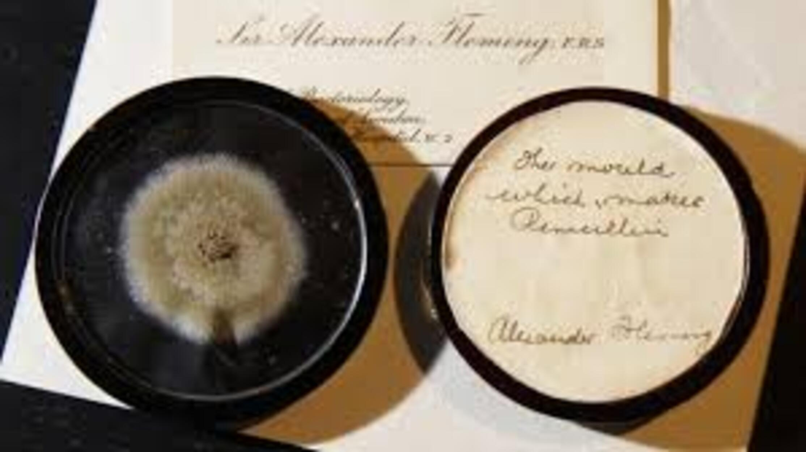

Penicilina - Como a descoberta da penicilina revolucionou a saúde?
Você já pensou em como era o mundo antes dos antibióticos? Hoje em dia nos parece quase que uma trivialidade pois o acesso a medicina e a fármacos é relativamente popular. Porém nem sempre foi assim. Antes da descoberta da penicilina, o primeiro antibiótico descoberto, o ser humano possuía uma expectativa de vida muita baixa, por volta dos 40 anos em algumas regiões. Tinha-se uma vida difícil e ameaçada por qualquer ferida que pudesse se contaminar levar a desfechos fatais
É importante ressaltar a penicilina não foi a primeira substância a ser utilizada como antibiótico. Outras substâncias foram amplamente utilizadas, desde a piocianina e até mesmo o arsênio. Todos com propriedades muito tóxicas para o ser humano, o que acabou provocando alta letalidade nas pessoas.
Em 1928, o médico, professor e bacteriologista escocês Alexander Fleming, atuava no laboratório do St. Mary’s Hospital, em Londres. Ele se dedicava ao estudo de culturas bacterianas de Staphylococcus aureus que tinha isolado da ferida de alguns pacientes. Após retornar de uma pausa no trabalho por alguns dias, o médico observou que uma de suas amostras de cultura havia sido contaminada e nela havia se formado um bolor de cor azul. Quando se preparava para fazer o descarte, Fleming observou que na placa contaminada havia se formado um halo transparente onde não havia crescimento de Staphylococcus aureus. Curiosamente, durante aquele período, as condições climáticas com temperaturas e umidades acima da média, favoreceram a proliferação do fungo. Posterirormente o bolor foi identificado como o fungo Penicillium notatum e a sustância foi chamada de penicilina. Apesar da descoberta, ela não se popularizou durante um longo tempo, principalmente devido a dificuldade em reproduzir o experimento, a dificuldade em obter grandes quantidades e devido a descrença e a falta de incentivo de seus superiores. Os estudos sobre a penicilina foram retomados somente em 1941, quando depois de isolada, testada e demonstrada sua eficácia ela se popularizou. Porém, o problema para a sua obtenção ainda persistia. Foi somente em 1959, que o químico John Sheehan conseguiu sintetizar a molécula da penicilina, abrindo caminho para sua utilização em larga escala.
A descoberta da penicilina trouxe grandes avanços para a humanidade. Iniciou-se uma nova era nos tratamentos médicos e para a saúde. Uma grande variedade de doenças, puderam ser tratadas trazendo maior qualidade de vida e um aumento na expectativa de vida da população.
Referências:
Ferreira MVC, Paes VR, Lichtenstein A. Penicilina: oitenta anos. Rev Med (São Paulo). 2008
Waldo H. Belloso. Historia de los antibióticos.Rev. Hosp. Ital. B.Aires 2009;29(2):102-11